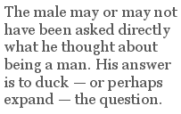

Stephen Edgar’s “Another Country” is the second poem in a ten-poem sequence called “Consume My Heart Away”. Very little biographical information is given in the whole group, let alone in this poem, so it is probably best to read it not as “confessional” poetry but a contribution, and very memorable one, to the long history of love poetry in English. Like many famous love poems, it is quite short and not without its ambiguities.
To go through the poem looking for its so-called “prose meaning” is a first, though minimal, step. We note that the poem is in the past tense and that the love affair is almost certainly over — though we are not told how it ended. At the outset, the protagonists seem to be thinking of the relevance of their gender in all this. The female declares that she “love(s) being a woman”. The male may or may not have been asked directly what he thought about being a man. His answer is to duck — or perhaps expand — the question. “Just being human / Can sometimes seem too much to bear.”
In the second stanza the poet goes on to give some sense of what he means by this; how his hands hold the memory of her body and his tongue itself “recalls (her) salt-sweet skin”. We may surmise from that “salt-sweet” that the affair had its sweeter and its saltier moments, though salt in the language of eroticism is, of course, not necessarily negative. The narrator then goes on to “borrow” someone else’s line (or more properly, as T. S. Eliot recommended, to steal it): “her hair smelled / Like a country I could be happy in”. Notice how we’re not given the irrelevant colour or texture of her hair; it’s just a place he felt he “could be happy in”. If we assumed the relationship was already over in the first stanza it becomes even more clear in the second. There’s an unstated “could have been” buried in there somewhere. Her hair is not a country he’s still happily living in — though he clearly remembers its potential as such a place.
In the third stanza the narrator takes this image further. The “domain” mentioned is primarily that country of potential happiness though, by extension perhaps, it could be the woman herself in her totality — that body, that “salt-sweet skin”. Now, however, since the affair is over, he has no way of getting back to her in any human or physical form. It is only in certain sorts of weather that she returns to him, taking the form of “the swept sky / Or a thin fall of cold sweet rain”.
It’s worth thinking for a moment what these two images say about the woman in question. She has become insubstantial as the sky but it is a “swept“ sky which implies the finality of her having been “swept“ away. She is also a sensuous memory. The eroticism mentioned in the first stanza (and the second, for that matter) returns here as the sensuousness of a “fall of cold sweet rain”. The memory is “cold” because she is gone — but also, perhaps, because coldness itself can be bracing. The rain is “thin”, reflecting her distance from him. It is still a “sweet” rain, however, which implies that the impulse that drew him to her in the first place may not have yet abated. She is still very much a memory even though she is also “Another Country”, as the title suggests.
Stephen Edgar is known these days as being the only Australian poet who almost invariably uses regular metre and rhyme. His employment of it in “Another Country” is essential to its success. It’s impossible to reimagine the poem into free verse. Edgar’s steady, though occasionally varied, iambic tetrameters give a dignity and a sort of hard-won formality to the poem. Love has been called a “disorder of the senses” but here, after the event, the feelings are “straightened” into metre and into a tight abab rhyme scheme. The original experience may have been chaotic perhaps (almost “too much to bear”?) but that confusion has been caught and somehow made permanent by these technical regularities.
The slightly elevated, incantatory feeling created by the steady tetrameters also has the effect of lifting the affair to another level. This has not been some seedy one-night stand to be remembered with smiling bemusement or vague regret. This has been an experience worthy of the form it has now been given. Indeed, with these regularities, it becomes an experience worthy of being memorised. It will thus stay in the reader’s mind just as the affair itself has persisted in the mind of the poet who remembers it with such pleasure — and, in a sense, pain. As readers, the form has brought us closer to the experience itself, albeit vicariously.
Of course, these tetrameters and abab rhyme schemes have been responsible for much forgettable poetry over the centuries. It’s interesting to see how Edgar avoids the fate that overtook so many of his predecessors. One small one is, perhaps, the half-rhyme he uses between “woman“ and “human“ (though it is, admittedly, the only half-rhyme in the poem). More important, however, is the slight rhythmic irregularity to be found in many of the lines. We note the adjacency of the stressed syllables of “loved” and “be” in the first line where the normal pattern would be “She said she loved being a woman”. This idiomatic variation gives the line (and the poem that follows it) a conversational straightforwardness it wouldn’t have if all the lines were as regular as, say, “It’s not in human formthat I” or “The hands remember what they held“.
In some cases, these variations are minimal but that only intensifies their effect. Take the line “The tongue recalls the salt-sweet skin“, for instance. We know that the scansion should be as indicated but we can’t help giving those three important monosyllables equal force, as if to savour each one in turn — “Salt-sweet skin“. Something similar happens with the irregularities in the last two lines of the poem with the adjacencies of “swept sky” and “thin fall”. We are forced to slow down and give each word its unique value. And yet, at the same time, we have the satisfaction of having all these things in a formal context which provides the enhancements already mentioned.
If one goes looking for minor criticisms with which to “balance the budget“, as it were, one discovers that some of these conceivable defects are, in fact, advantages. Take, for instance, the omission of the second verb in the poem’s second line: “my face her hair”. This may seem confusing at first but it actually brings out the closeness of the narrator’s face and the hair he was pressing it into, so much so that they appear to risk becoming the same thing. A similar rebuttal can be made of the poet’s apparent laziness in not saying who wrote the convenient line “her hair smelled / Like a country I could be happy in”. When one is in love, or perhaps is remembering being in love, one is not inclined to footnoting. One remembers the appositeness of the phrase, not where it came from. Admittedly, Edgar does mention the source in the acknowledgements in the book in which “Another Country” was first collected (Chapter 27 of Russell Hoban’s Fremder, in fact) but such scrupulosity is not for the poem itself — nor for the mood from which it emerged.
The American-derived free verse orthodoxy of the past half-century or so would have us believe that poems such as “Another Country“ must inevitably sound “dated“ and sentimental because they use forms which have been around for hundreds of years. Stephen Edgar in this poem — and in many others — has shown this to be a truly mistaken notion. The resources of traditional metres and rhyme schemes are just as available, just as powerful, as they ever were. It’s just a matter of knowing how to use them.
This essay by Geoff Page appears in 60 Classic Australian Poems, forthcoming from UNSW Press.
“Another Country” is from Stephen Edgar’s collection Other Summers.
Geoff Page is a Canberra-based poet whose first book was published in 1971. As well as poetry volumes, he has published two prose novels, four verse novels and other works, including anthologies, criticism and translations. His most recent books are Agnostic Skies (Five Islands Press 2006), Eighty Great Poems from Chaucer to Now (UNSW Press 2006), Seriatim (Salt, UK 2007) and 60 Classic Australian Poems (UNSW Press 2009).